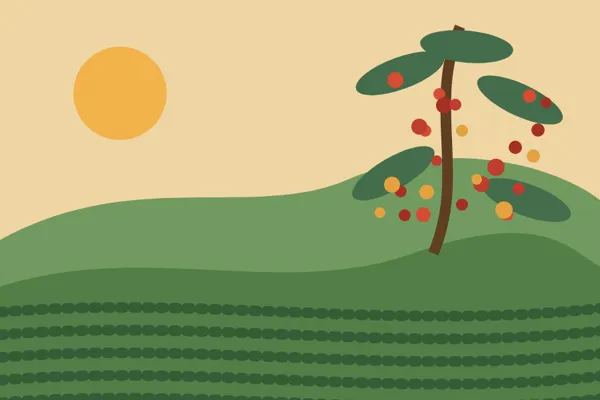
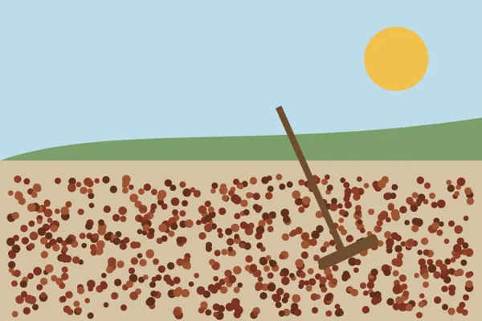
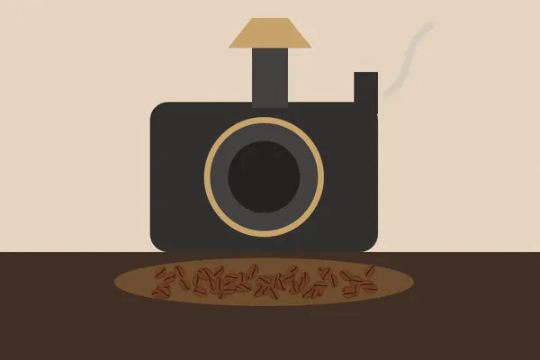
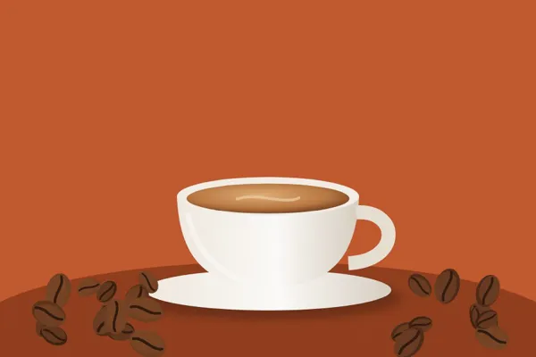

Torrefação artesanal · Serra da Mantiqueira
Café de montanha, torrado toda semana
Compramos direto de pequenos produtores acima de 1.000 metros e torramos em lotes de 15 kg. Seu café chega com no máximo 7 dias de torra.
- 8 fazendas parceiras
- Notas SCA de 82 a 90
- Frete grátis acima de R$ 150

- Serra da Mantiqueira
- Alta Mogiana
- Sul de Minas
- Cerrado Mineiro
- Alta Paulista
- Pedra Bela
Torrados nesta semana
Cafés da semana
Do pé à xícara
Quatro etapas, nenhum atalho
-

01Colheita seletiva
Só os frutos maduros, colhidos à mão em três passadas pelo mesmo pé.
-

02Secagem lenta
De 15 a 25 dias no terreiro suspenso, revirando o café a cada hora.
-

03Torra em lotes
Perfil de torra próprio para cada café, registrado lote a lote.
-

04Na sua xícara
Entrega em até 3 dias úteis na capital e 5 no interior.
Quem toma, conta
O que dizem os assinantes
“O Vale do Garcia mudou o que eu achava de café. Parece um chá de frutas vermelhas, e minha família inteira virou fã.”
Luciana MoraesCampinas – SP · assinante desde 2024
“Chega sempre fresquinho, com a data da torra no pacote. O Pedra Bela na moka virou meu ritual de domingo.”
Rafael TanakaSorocaba – SP · assinante desde 2025
“A página de preparo com o cronômetro me ensinou a usar a V60 do jeito certo. Nunca mais café amargo.”
Beatriz AlvesSão Paulo – SP · assinante desde 2023
“Uso o Cerrado Noturno na cafeteria do meu restaurante. Os clientes perguntam o nome do café toda semana.”
João CarvalhoRibeirão Preto – SP · cliente desde 2022
Clube Torra Serrana
Dois cafés por mês, sem pensar nisso
Todo mês você recebe dois pacotes de 250 g escolhidos pelo nosso mestre de torra, com cartão de degustação.
R$ 109,90 / mês
No anual: 12 × R$ 94,90, cobrados uma vez por ano.